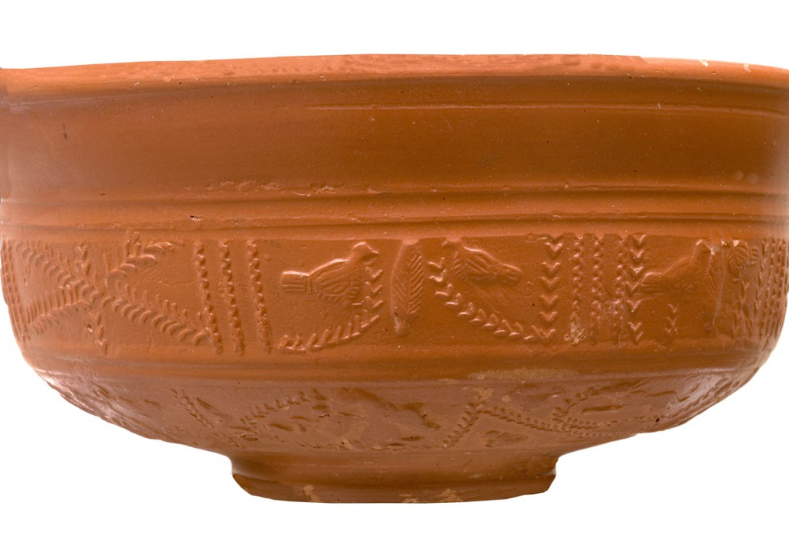

Hallazgos · Cultura material
Cerámica
La cerámica fue esencial en la vida cotidiana romana. Los recipientes se utilizaban para cocinar, servir alimentos, transportar mercancías y almacenar productos. Sus formas, materiales y decoraciones nos ayudan a comprender los hábitos de las comunidades antiguas.

Objetos de barro
La cerámica en el mundo romano
Las vasijas y otros objetos cerámicos estaban presentes en muchas actividades domésticas y comerciales. Estudiarlos permite investigar los sistemas de producción, el consumo y las relaciones económicas de época romana.
Selecciona una pieza para conocer sus características y sus posibles funciones.
Explora las piezas
Objetos destacados
Pulsa sobre una imagen para abrir su ficha informativa.
Objetos encontrados: 3
No se han encontrado objetos con esos criterios.